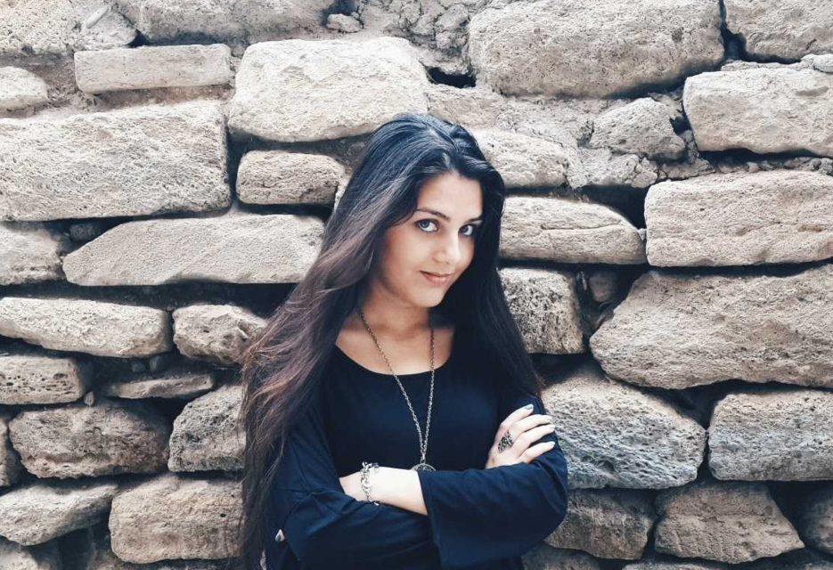

About Me
Hi! My name is Lala. I'm 25 years old. My home town is Baku which is the capital of Azerbaijan. After graduating from Azerbaijan University of Languages I had been working as a teacher for about 6 months and then decided to change my profile. Currently I'm working as Junior Training Specialist in one of the major retail companies in my country. Besides currently I'm studying web development at Tech Academy.
Being an introvert reflects on my hobbies. I love anything of fantasy genre whether it's movies, TV series, books or cartoons. My favourite TV series are Supernatural and Sherlock. And obviously my favourite book is Harry Potter series. Hope to learn riding a bicycle and playing guitar one day so they become my hobbies as well.